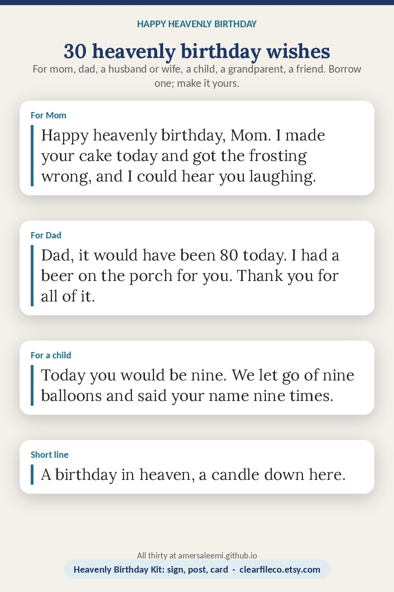

Happy heavenly birthday wishes
A birthday still comes every year. These are written to be posted, texted or written on a card by the cake; take the one that is closest and change it until it sounds like you.
For Mom
- Happy heavenly birthday, Mom. I made your cake today and got the frosting wrong, and I could hear you laughing.
- Mom, you would be [78] today. I lit a candle, and I told the kids the story about the bus. Miss you every day.
- Happy birthday in heaven, Mama. Everything good in me started with you.
- Another birthday without you, Mom. I still reach for the phone. I hope they are spoiling you today.
- Happy heavenly birthday to the woman who taught me everything that matters. Save me a dance.
For Dad
- Happy heavenly birthday, Dad. I fixed the fence the way you showed me, and I used your words when I did it.
- Dad, it would have been [80] today. I had a beer on the porch for you. Thank you for all of it.
- Happy birthday in heaven, Pops. I still hear you every time I check the oil.
- To my father on his heavenly birthday: the best man I knew, and still the one I am trying to be like.
- Happy heavenly birthday, Dad. The kids know your jokes now. All of them. You are welcome.
For a husband or wife
- Happy heavenly birthday, my love. [32] years was not enough. I will keep celebrating you every year.
- It is your birthday, and the house is quiet. I played our song. Happy birthday, sweetheart, wherever you are.
- Happy birthday in heaven to the one I chose and would choose again.
- You would be [65] today. I bought the cake you liked and no one else does. Love you always.
For a child
- Happy heavenly birthday, my sweet [Ava]. Today you would be [9]. We let go of nine balloons and said your name nine times.
- Happy birthday in heaven, baby. There is not a day I do not carry you.
- To our boy on his birthday: we lit your candle, we told your stories, and we laughed, because you would have wanted us to.
- Happy heavenly birthday, [Leo]. Loved for every one of your days, and all the days since.
For a grandparent
- Happy heavenly birthday, Grandma. I made your soup and it was almost as good. Almost.
- Grandpa, happy birthday in heaven. I still have your watch, and I still set it five minutes fast like you did.
- Happy heavenly birthday, Nana. You would be [95] today. I think of you with every garden I pass.
For a sibling or a friend
- Happy heavenly birthday, brother. Nobody has made me laugh like that since.
- Happy birthday in heaven, [Jess]. I ordered your usual and sat in our booth. It was not the same.
- To my sister on her birthday: I still tell people about you. I always will.
- Happy heavenly birthday, my friend. Thirty years of birthdays together, and I am not stopping now.
Short lines for a post or a sign
- Happy heavenly birthday. Loved, missed, celebrated.
- Born [March 4]. Loved forever.
- A birthday in heaven, a candle down here.
- Happy birthday in heaven, [Mom]. Forever in our hearts.
- Celebrating you today and every day.
Ways to mark the day
- Light a candle at the time they were born, or at dinner.
- Make their cake, or their favorite meal, and set a place.
- Visit the grave with a small framed sign, flowers and a toast.
- Do the thing they loved: the hike, the ballgame, the bakery run.
- Give in their name: a donation, a meal for someone else, a card to someone who is grieving.
- Post a square picture with the photo, the name and "Born ...", and let people reply with a memory.
The matching printables
Heavenly Birthday Kit on Etsy →Funeral Prayer Card Template on Etsy →Heavenly Birthday Kit: an invitation, a square post, an 8 x 10 sign and a card with a verse, in six designs. Funeral Prayer Card Template: a keepsake card for the table, in the same designs. Instant download; editable in Canva, Google Slides and PowerPoint.

Save it to Pinterest so you can find it again. Free to share; please link to the page rather than copying it.